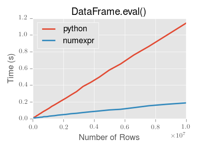
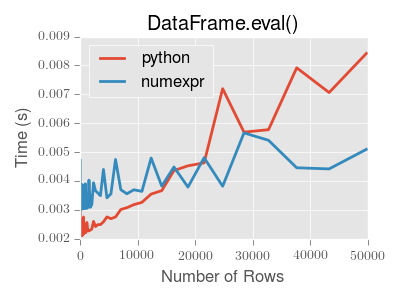

Enhancing Performance¶
Cython (Writing C extensions for pandas)¶
For many use cases writing pandas in pure python and numpy is sufficient. In some computationally heavy applications however, it can be possible to achieve sizeable speed-ups by offloading work to cython.
This tutorial assumes you have refactored as much as possible in python, for example trying to remove for loops and making use of numpy vectorization, it’s always worth optimising in python first.
This tutorial walks through a “typical” process of cythonizing a slow computation. We use an example from the cython documentation but in the context of pandas. Our final cythonized solution is around 100 times faster than the pure python.
Pure python¶
We have a DataFrame to which we want to apply a function row-wise.
In [1]: df = DataFrame({'a': randn(1000), 'b': randn(1000),'N': randint(100, 1000, (1000)), 'x': 'x'})
In [2]: df
Out[2]:
N a b x
0 585 0.469112 -0.218470 x
1 841 -0.282863 -0.061645 x
2 251 -1.509059 -0.723780 x
3 972 -1.135632 0.551225 x
4 181 1.212112 -0.497767 x
5 458 -0.173215 0.837519 x
6 159 0.119209 1.103245 x
7 650 -1.044236 -1.118384 x
8 389 -0.861849 -0.542980 x
9 772 -2.104569 -0.994002 x
10 174 -0.494929 1.508742 x
11 394 1.071804 -0.328697 x
12 199 0.721555 -0.562235 x
13 318 -0.706771 0.001596 x
14 281 -1.039575 0.077546 x
... ... ... ..
[1000 rows x 4 columns]
Here’s the function in pure python:
In [3]: def f(x):
...: return x * (x - 1)
...:
In [4]: def integrate_f(a, b, N):
...: s = 0
...: dx = (b - a) / N
...: for i in range(N):
...: s += f(a + i * dx)
...: return s * dx
...:
We achieve our result by by using apply (row-wise):
In [5]: %timeit df.apply(lambda x: integrate_f(x['a'], x['b'], x['N']), axis=1)
1 loops, best of 3: 231 ms per loop
But clearly this isn’t fast enough for us. Let’s take a look and see where the time is spent during this operation (limited to the most time consuming four calls) using the prun ipython magic function:
In [6]: %prun -l 4 df.apply(lambda x: integrate_f(x['a'], x['b'], x['N']), axis=1)
594726 function calls (594725 primitive calls) in 0.339 seconds
Ordered by: internal time
List reduced from 104 to 4 due to restriction <4>
ncalls tottime percall cumtime percall filename:lineno(function)
1000 0.189 0.000 0.297 0.000 <ipython-input-4-91e33489f136>:1(integrate_f)
552423 0.103 0.000 0.103 0.000 <ipython-input-3-bc41a25943f6>:1(f)
3000 0.006 0.000 0.028 0.000 index.py:1019(get_value)
3000 0.005 0.000 0.034 0.000 series.py:489(__getitem__)
By far the majority of time is spend inside either integrate_f or f, hence we’ll concentrate our efforts cythonizing these two functions.
Note
In python 2 replacing the range with its generator counterpart (xrange) would mean the range line would vanish. In python 3 range is already a generator.
Plain cython¶
First we’re going to need to import the cython magic function to ipython:
In [7]: %load_ext cythonmagic
Now, let’s simply copy our functions over to cython as is (the suffix is here to distinguish between function versions):
In [8]: %%cython
...: def f_plain(x):
...: return x * (x - 1)
...: def integrate_f_plain(a, b, N):
...: s = 0
...: dx = (b - a) / N
...: for i in range(N):
...: s += f_plain(a + i * dx)
...: return s * dx
...:
Note
If you’re having trouble pasting the above into your ipython, you may need to be using bleeding edge ipython for paste to play well with cell magics.
In [9]: %timeit df.apply(lambda x: integrate_f_plain(x['a'], x['b'], x['N']), axis=1)
10 loops, best of 3: 127 ms per loop
Already this has shaved a third off, not too bad for a simple copy and paste.
Adding type¶
We get another huge improvement simply by providing type information:
In [10]: %%cython
....: cdef double f_typed(double x) except? -2:
....: return x * (x - 1)
....: cpdef double integrate_f_typed(double a, double b, int N):
....: cdef int i
....: cdef double s, dx
....: s = 0
....: dx = (b - a) / N
....: for i in range(N):
....: s += f_typed(a + i * dx)
....: return s * dx
....:
In [11]: %timeit df.apply(lambda x: integrate_f_typed(x['a'], x['b'], x['N']), axis=1)
10 loops, best of 3: 30.1 ms per loop
Now, we’re talking! It’s now over ten times faster than the original python implementation, and we haven’t really modified the code. Let’s have another look at what’s eating up time:
In [12]: %prun -l 4 df.apply(lambda x: integrate_f_typed(x['a'], x['b'], x['N']), axis=1)
41303 function calls (41302 primitive calls) in 0.043 seconds
Ordered by: internal time
List reduced from 102 to 4 due to restriction <4>
ncalls tottime percall cumtime percall filename:lineno(function)
3000 0.006 0.000 0.027 0.000 index.py:1019(get_value)
3000 0.005 0.000 0.034 0.000 series.py:489(__getitem__)
3000 0.004 0.000 0.004 0.000 {method 'get_value' of 'pandas.index.IndexEngine' objects}
6004 0.004 0.000 0.004 0.000 {getattr}
Using ndarray¶
It’s calling series... a lot! It’s creating a Series from each row, and get-ting from both the index and the series (three times for each row). Function calls are expensive in python, so maybe we could minimise these by cythonizing the apply part.
Note
We are now passing ndarrays into the cython function, fortunately cython plays very nicely with numpy.
In [13]: %%cython
....: cimport numpy as np
....: import numpy as np
....: cdef double f_typed(double x) except? -2:
....: return x * (x - 1)
....: cpdef double integrate_f_typed(double a, double b, int N):
....: cdef int i
....: cdef double s, dx
....: s = 0
....: dx = (b - a) / N
....: for i in range(N):
....: s += f_typed(a + i * dx)
....: return s * dx
....: cpdef np.ndarray[double] apply_integrate_f(np.ndarray col_a, np.ndarray col_b, np.ndarray col_N):
....: assert (col_a.dtype == np.float and col_b.dtype == np.float and col_N.dtype == np.int)
....: cdef Py_ssize_t i, n = len(col_N)
....: assert (len(col_a) == len(col_b) == n)
....: cdef np.ndarray[double] res = np.empty(n)
....: for i in range(len(col_a)):
....: res[i] = integrate_f_typed(col_a[i], col_b[i], col_N[i])
....: return res
....:
The implementation is simple, it creates an array of zeros and loops over the rows, applying our integrate_f_typed, and putting this in the zeros array.
Warning
In 0.13.0 since Series has internaly been refactored to no longer sub-class ndarray but instead subclass NDFrame, you can not pass a Series directly as a ndarray typed parameter to a cython function. Instead pass the actual ndarray using the .values attribute of the Series.
Prior to 0.13.0
apply_integrate_f(df['a'], df['b'], df['N'])
Use .values to get the underlying ndarray
apply_integrate_f(df['a'].values, df['b'].values, df['N'].values)
Note
Loops like this would be extremely slow in python, but in Cython looping over numpy arrays is fast.
In [14]: %timeit apply_integrate_f(df['a'].values, df['b'].values, df['N'].values)
100 loops, best of 3: 2.56 ms per loop
We’ve gotten another big improvement. Let’s check again where the time is spent:
In [15]: %prun -l 4 apply_integrate_f(df['a'].values, df['b'].values, df['N'].values)
33 function calls in 0.003 seconds
Ordered by: internal time
List reduced from 13 to 4 due to restriction <4>
ncalls tottime percall cumtime percall filename:lineno(function)
1 0.003 0.003 0.003 0.003 {_cython_magic_5a6f3e72f584366fd3c783dd53b41dc3.apply_integrate_f}
1 0.000 0.000 0.003 0.003 <string>:1(<module>)
3 0.000 0.000 0.000 0.000 frame.py:1635(__getitem__)
3 0.000 0.000 0.000 0.000 index.py:604(__contains__)
As one might expect, the majority of the time is now spent in apply_integrate_f, so if we wanted to make anymore efficiencies we must continue to concentrate our efforts here.
More advanced techniques¶
There is still scope for improvement, here’s an example of using some more advanced cython techniques:
In [16]: %%cython
....: cimport cython
....: cimport numpy as np
....: import numpy as np
....: cdef double f_typed(double x) except? -2:
....: return x * (x - 1)
....: cpdef double integrate_f_typed(double a, double b, int N):
....: cdef int i
....: cdef double s, dx
....: s = 0
....: dx = (b - a) / N
....: for i in range(N):
....: s += f_typed(a + i * dx)
....: return s * dx
....: @cython.boundscheck(False)
....: @cython.wraparound(False)
....: cpdef np.ndarray[double] apply_integrate_f_wrap(np.ndarray[double] col_a, np.ndarray[double] col_b, np.ndarray[Py_ssize_t] col_N):
....: cdef Py_ssize_t i, n = len(col_N)
....: assert len(col_a) == len(col_b) == n
....: cdef np.ndarray[double] res = np.empty(n)
....: for i in range(n):
....: res[i] = integrate_f_typed(col_a[i], col_b[i], col_N[i])
....: return res
....:
In [17]: %timeit apply_integrate_f_wrap(df['a'].values, df['b'].values, df['N'].values)
100 loops, best of 3: 2.16 ms per loop
Even faster, with the caveat that a bug in our cython code (an off-by-one error, for example) might cause a segfault because memory access isn’t checked.
Expression Evaluation via eval() (Experimental)¶
New in version 0.13.
The top-level function eval() implements expression evaluation of Series and DataFrame objects.
Note
To benefit from using eval() you need to install numexpr. See the recommended dependencies section for more details.
The point of using eval() for expression evaluation rather than plain Python is two-fold: 1) large DataFrame objects are evaluated more efficiently and 2) large arithmetic and boolean expressions are evaluated all at once by the underlying engine (by default numexpr is used for evaluation).
Note
You should not use eval() for simple expressions or for expressions involving small DataFrames. In fact, eval() is many orders of magnitude slower for smaller expressions/objects than plain ol’ Python. A good rule of thumb is to only use eval() when you have a DataFrame with more than 10,000 rows.
eval() supports all arithmetic expressions supported by the engine in addition to some extensions available only in pandas.
Note
The larger the frame and the larger the expression the more speedup you will see from using eval().
Supported Syntax¶
These operations are supported by eval():
- Arithmetic operations except for the left shift (<<) and right shift (>>) operators, e.g., df + 2 * pi / s ** 4 % 42 - the_golden_ratio
- Comparison operations, e.g., 2 < df < df2
- Boolean operations, e.g., df < df2 and df3 < df4 or not df_bool
- list and tuple literals, e.g., [1, 2] or (1, 2)
- Attribute access, e.g., df.a
- Subscript expressions, e.g., df[0]
- Simple variable evaluation, e.g., pd.eval('df') (this is not very useful)
This Python syntax is not allowed:
- Expressions
- Function calls
- is/is not operations
- if expressions
- lambda expressions
- list/set/dict comprehensions
- Literal dict and set expressions
- yield expressions
- Generator expressions
- Boolean expressions consisting of only scalar values
- Statements
eval() Examples¶
eval() works wonders for expressions containing large arrays
First let’s create 4 decent-sized arrays to play with:
In [18]: import pandas as pd
In [19]: from pandas import DataFrame, Series
In [20]: from numpy.random import randn
In [21]: import numpy as np
In [22]: nrows, ncols = 20000, 100
In [23]: df1, df2, df3, df4 = [DataFrame(randn(nrows, ncols)) for _ in xrange(4)]
Now let’s compare adding them together using plain ol’ Python versus eval():
In [24]: %timeit df1 + df2 + df3 + df4
10 loops, best of 3: 55.9 ms per loop
In [25]: %timeit pd.eval('df1 + df2 + df3 + df4')
10 loops, best of 3: 31.1 ms per loop
Now let’s do the same thing but with comparisons:
In [26]: %timeit (df1 > 0) & (df2 > 0) & (df3 > 0) & (df4 > 0)
10 loops, best of 3: 67.1 ms per loop
In [27]: %timeit pd.eval('(df1 > 0) & (df2 > 0) & (df3 > 0) & (df4 > 0)')
10 loops, best of 3: 25 ms per loop
eval() also works with unaligned pandas objects:
In [28]: s = Series(randn(50))
In [29]: %timeit df1 + df2 + df3 + df4 + s
10 loops, best of 3: 91.7 ms per loop
In [30]: %timeit pd.eval('df1 + df2 + df3 + df4 + s')
10 loops, best of 3: 22.6 ms per loop
Note
Operations such as
1 and 2 # would parse to 1 & 2, but should evaluate to 2 3 or 4 # would parse to 3 | 4, but should evaluate to 3 ~1 # this is okay, but slower when using eval
should be performed in Python. An exception will be raised if you try to perform any boolean/bitwise operations with scalar operands that are not of type bool or np.bool_. Again, you should perform these kinds of operations in plain Python.
The DataFrame.eval method (Experimental)¶
In addition to the top level eval() function you can also evaluate an expression in the “context” of a DataFrame.
In [31]: df = DataFrame(randn(5, 2), columns=['a', 'b'])
In [32]: df.eval('a + b')
Out[32]:
0 -0.246747
1 0.867786
2 -1.626063
3 -1.134978
4 -1.027798
dtype: float64
Any expression that is a valid eval() expression is also a valid DataFrame.eval expression, with the added benefit that you don’t have to prefix the name of the DataFrame to the column(s) you’re interested in evaluating.
In addition, you can perform assignment of columns within an expression. This allows for formulaic evaluation. Only a single assignment is permitted. The assignment target can be a new column name or an existing column name, and it must be a valid Python identifier.
In [33]: df = DataFrame(dict(a=range(5), b=range(5, 10)))
In [34]: df.eval('c = a + b')
In [35]: df.eval('d = a + b + c')
In [36]: df.eval('a = 1')
In [37]: df
Out[37]:
a b c d
0 1 5 5 10
1 1 6 7 14
2 1 7 9 18
3 1 8 11 22
4 1 9 13 26
[5 rows x 4 columns]
Local Variables¶
You can refer to local variables the same way you would in vanilla Python
In [38]: df = DataFrame(randn(5, 2), columns=['a', 'b'])
In [39]: newcol = randn(len(df))
In [40]: df.eval('b + newcol')
Out[40]:
0 -0.173926
1 2.493083
2 -0.881831
3 -0.691045
4 1.334703
dtype: float64
Note
The one exception is when you have a local (or global) with the same name as a column in the DataFrame
df = DataFrame(randn(5, 2), columns=['a', 'b']) a = randn(len(df)) df.eval('a + b') NameResolutionError: resolvers and locals overlap on names ['a']
To deal with these conflicts, a special syntax exists for referring variables with the same name as a column
In [41]: df.eval('@a + b') Out[41]: 0 0.291737 1 -0.073076 2 -2.259372 3 -1.513447 4 -0.222295 dtype: float64
The same is true for query()
In [42]: df.query('@a < b') Out[42]: a b 1 -1.215949 1.670837 3 -0.835893 0.315213 4 -1.337334 0.772364 [3 rows x 2 columns]
eval() Parsers¶
There are two different parsers and and two different engines you can use as the backend.
The default 'pandas' parser allows a more intuitive syntax for expressing query-like operations (comparisons, conjunctions and disjunctions). In particular, the precedence of the & and | operators is made equal to the precedence of the corresponding boolean operations and and or.
For example, the above conjunction can be written without parentheses. Alternatively, you can use the 'python' parser to enforce strict Python semantics.
In [43]: expr = '(df1 > 0) & (df2 > 0) & (df3 > 0) & (df4 > 0)'
In [44]: x = pd.eval(expr, parser='python')
In [45]: expr_no_parens = 'df1 > 0 & df2 > 0 & df3 > 0 & df4 > 0'
In [46]: y = pd.eval(expr_no_parens, parser='pandas')
In [47]: np.all(x == y)
Out[47]: True
The same expression can be “anded” together with the word and as well:
In [48]: expr = '(df1 > 0) & (df2 > 0) & (df3 > 0) & (df4 > 0)'
In [49]: x = pd.eval(expr, parser='python')
In [50]: expr_with_ands = 'df1 > 0 and df2 > 0 and df3 > 0 and df4 > 0'
In [51]: y = pd.eval(expr_with_ands, parser='pandas')
In [52]: np.all(x == y)
Out[52]: True
The and and or operators here have the same precedence that they would in vanilla Python.
eval() Backends¶
There’s also the option to make eval() operate identical to plain ol’ Python.
Note
Using the 'python' engine is generally not useful, except for testing other eval() engines against it. You will acheive no performance benefits using eval() with engine='python'.
You can see this by using eval() with the 'python' engine is actually a bit slower (not by much) than evaluating the same expression in Python:
In [53]: %timeit df1 + df2 + df3 + df4
10 loops, best of 3: 62.7 ms per loop
In [54]: %timeit pd.eval('df1 + df2 + df3 + df4', engine='python')
10 loops, best of 3: 50.8 ms per loop
eval() Performance¶
eval() is intended to speed up certain kinds of operations. In particular, those operations involving complex expressions with large DataFrame/Series objects should see a significant performance benefit. Here is a plot showing the running time of eval() as function of the size of the frame involved in the computation. The two lines are two different engines.
Note
Operations with smallish objects (around 15k-20k rows) are faster using plain Python:

This plot was created using a DataFrame with 3 columns each containing floating point values generated using numpy.random.randn().
Technical Minutia¶
- Expressions that would result in an object dtype (including simple variable evaluation) have to be evaluated in Python space. The main reason for this behavior is to maintain backwards compatbility with versions of numpy < 1.7. In those versions of numpy a call to ndarray.astype(str) will truncate any strings that are more than 60 characters in length. Second, we can’t pass object arrays to numexpr thus string comparisons must be evaluated in Python space.
- The upshot is that this only applies to object-dtype’d expressions. So, if you have an expression–for example–that’s a string comparison and-ed together with another boolean expression that’s from a numeric comparison, the numeric comparison will be evaluated by numexpr. In fact, in general, query()/eval() will “pick out” the subexpressions that are eval-able by numexpr and those that must be evaluated in Python space transparently to the user.